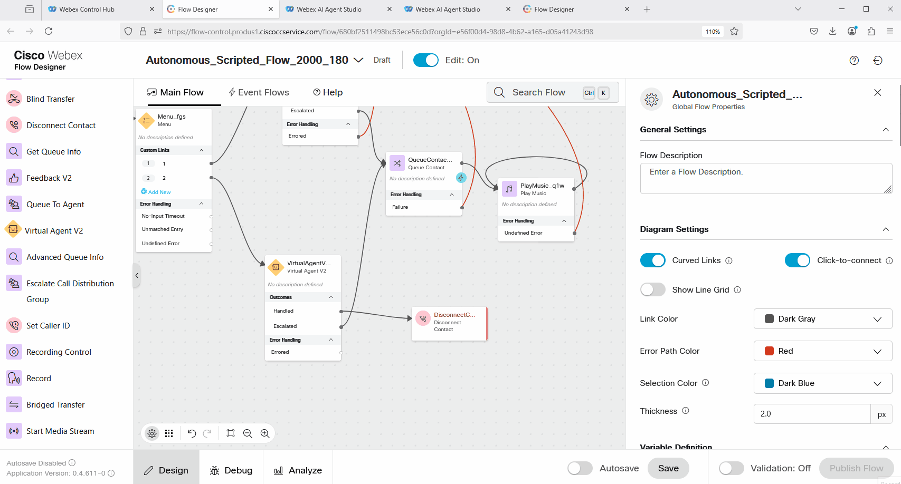

AI Lab Scripted Mission5
Mission Details
In the previous Mission 3, you created intents, entities, and responses to enable the Scripted Agent to understand and respond to order-tracking requests. However, no logic or API calls were configured yet to retrieve the order information. In this mission, you will configure the fulfillment flow to use an API call to retrieve the order status and send it back to the caller.
Build
Task 1. Configure a Custom Event to send data from AI Studio to WxCC Voice Flow.
-
The fulfillment for Scripted AI Agent currently is done in the WxCC Voice Flow in order to comply with all policies and regulations.
-
Open up AI Studio portal go to Scripts > responses and open up response track_order. Go to Voice Channel.
-
Add Custom Event and configure it with the following:
Event Name: order_details
Event payload: {"ordernumber":"${entity.order_number}"}.
Save the updated response. -
Understanding why we need to use a Custom Event for fulfillment: The API call to retrieve the order status can be made from the Voice Flow. By using a Custom Event, we send the order_number entity that the Scripted Agent collects during the call to retrieve the status.
{kind=link}
{kind=link}
{kind=link}
{kind=link}
Task 2. Make API call from Voice Flow to retrieve the order status.
-
From Control Hub, go to Contact Center click on flows. Open up your flow. If you follow all lab steps the name should be Autonomous_Scripted_Flow_2000_Your_Attendee_ID. Or if you have different name, find your flow. Click on it to open the Flow.
-
Select Edit for the flow, click anywhere on the gray area in the flow, and look for the Flow Variables on the right side.
-
Create 3 empty String Variables with names:
order_id
MetaData_Scripted_Agent
order_status -
The fulfillment will go over the Handled output. So in your Voice flow, remove the Disconnect Contact block and add SetVariable block. Connect Handled output to the SetVariable block. 
-
In the next step, you will assign the flow variable MetaData_Scripted_Agent, which we created earlier, with the value of the MetaData from the VirtualAgentV2 block. This will allow us to decrypt and review the MetaData from the VirtualAgentV2 block, which could be useful for troubleshooting any issues with the fulfillment flow.
-
Click on the VirtualAgentV2 block, scroll down to Activity Output Variables, and copy the MetaData variable name. Then, open the SetVariable block and configure the MetaData_Scripted_Agent variable with the variable value you copied from the VirtualAgentV2 block. Make sure to enclose it in curly brackets.

-
Configure the Parse node with the following:
Input Variable: MetaData_Scripted_Agent
Content Type: JSON
Output Variable: order_id
Path Expression: $.ordernumber -
Understanding the Parse node configuration: The goal of the Parse node is to extract the order_number entity received from AI Studio and assign it to the flow variable named order_id. This variable will be used later in the API call.
-
Configure the HTTP block with the following:
Use Authenticated Endpoint: off
Request URL: https://67e9aa0bbdcaa2b7f5b9ed62.mockapi.io/customerOrder
Method: GET
Queue Parameters:
Key: id
Value: {{order_id}}
Content Type: Application/JSON
Parse Settings:
Content Type: JSON
Output Variable: order_status
Path Expression: $[0].status

-
Add Disconnect Contact and connect HTTPRequest node to the Disconnect Contact node. Validate and Publish the flow.
-
Please test the call by dialing the number configured with the Channel and Flow. Select option 2 in the IVR and say, "I want to track my order." Provide the order number that you created earlier. The call will then be disconnected. Open the Debug mode for your flow, find the latest call, and review the logs. You should see the status of your order.
-
In the next Mission 5 you will configure the flow to return the order status details back to the caller.
{kind=link}
{kind=link}
{kind=link}
{kind=link}
{kind=link}
{kind=link}
{kind=link}
{kind=link}
{kind=link}
{kind=link}
Congratulations, you have officially completed this mission! 🎉🎉